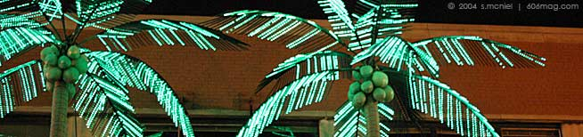

|
 |
|
I've been to some interesting intersections in the name of sixosix journalism, but none could hold a candle to the study in opposites that is Weed Street on a Thursday night.
I arrived at 9:30 p.m. , which in my mind was a good time to catch the action warming up. That was not the case: It was as silent as a church. I was told that in a few hours, when the scene was under full steam, the area would become the Vegas of Chicago, complete with big bars, gambling and exotic dancers. Since we're dealing with hardcore journalism here, I decided to make do with what I was given.
Ladies and gentlemen, Weed Street and the surrounding environs.
|
|
Jamba Juice and California Pizza Kitchen: Yuppies and sex acts. Rating: 9.3
The main characteristic of this intersection is its juxtaposition of differing elements – in this case, the bastions of yuppie drinking Jamba Juice and eating California Pizza Kitchen beside biker bars and topless clubs. I have to incriminate myself slightly on this one, because Jamba is one of the best possible things to have while nursing a hangover, but when paired with the Pizza Kitchen, the double whammy is almost too much. The Kitchen's latest press release on the company's Web site is that the management was just authorized to repurchase $20 million worth of common stock before going on to describe the restaurants as “a leading casual dining chain in the premium pizza segment.”
While I didn't know the premium pizza segment was such a cutthroat market, I was more angered by the fact that I couldn't have a pizza at that point in the evening. You would think the place could make a killing from the hordes of late-night bar patrons, but I'm no market researcher.
The final nail in the coffin of strangeness was the, let's say, exchange of money for pleasures of the flesh around the corner. I pointed out a good shot to the photographer with me, and in the process of setting up, she walked past a parked 1984 Chevy Astro Van. As she did so, a head popped up from under the driver's seat, ostensibly in the act of giving a something that rhymes with “snow bob.”
When I asked the photographer if she was noticed, she replied with, “I think they were both a little busy.”
Naturally. I still wanted a pizza, though.
|
|
Venus de Milo reproductions outside VIPs: Of course. Rating: 4.3
While I didn't expect anything extremely high-class from the area, especially after the scene just described above, I was pleasantly surprised by VIPs, the strip – oops! Gentleman's – club, with its fine renditions of the Venus de Milo lining its façade. Fulfilling all stereotypes, luxury cars lined the front parking spots: Lexus. Mercedes. Jaguar. Hyundai.
Looks like someone was slumming it that night.
From my vantage point slightly up the street, it looked as if I was in some surreal, alternate-universe version of Sin City, all lit by a neon glow of the palm trees in front of North Beach, a bar / indoor sand volleyball court / indoor basketball court arena all in one. There's just something to be said about standing on a sidewalk, watching a rat scurry across the street, and then walking into a bar lit on the outside by green palm trees. There's nothing that says American commercial excess like that.
As a side note, the only other establishment I've seen with décor like that sells spinning rims.
The bouncers outside VIPs were surprisingly open to the sixosix photographer. Maybe we looked legit. Maybe they wanted the free publicity. Or maybe they just didn't care what slightly disheveled, non-strip-club-patron-looking people were up to.
|
|
| ad |
|
| comments: intersection section |
|
subject: Josh
date: 09.02.2004
name: land of milk and honey
comment:
I've seen hookers on street corners before, usually in the less the desirable parts of the city, but only on weed street with hundreds of people around and a cop a block away have I been asked if i was "looking for a good time" God Bless. |
| |
subject: Pornpole
date: 09.09.2004
name: Bill
comment:
A few years ago, my father, in the presence of my mother, asked my wife and I if we had ever heard of "cornhole." We chose reticence as the course of best reply, and listened with composured deference to details of its play. Yes, cornhole occurs at Joe's Sports Bar on Weed Street, and, if your curiosity continues to pique, chicagocornhole.com proclaims itself "your everything Cornhole source." |
| |
| |